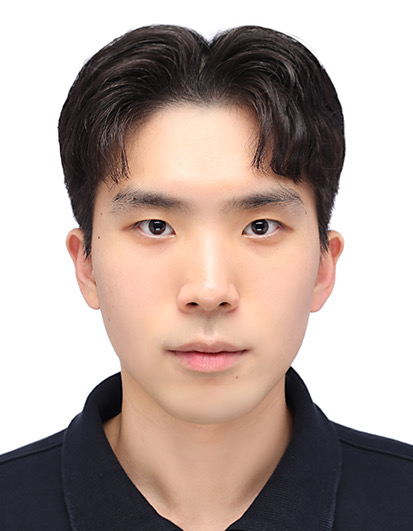
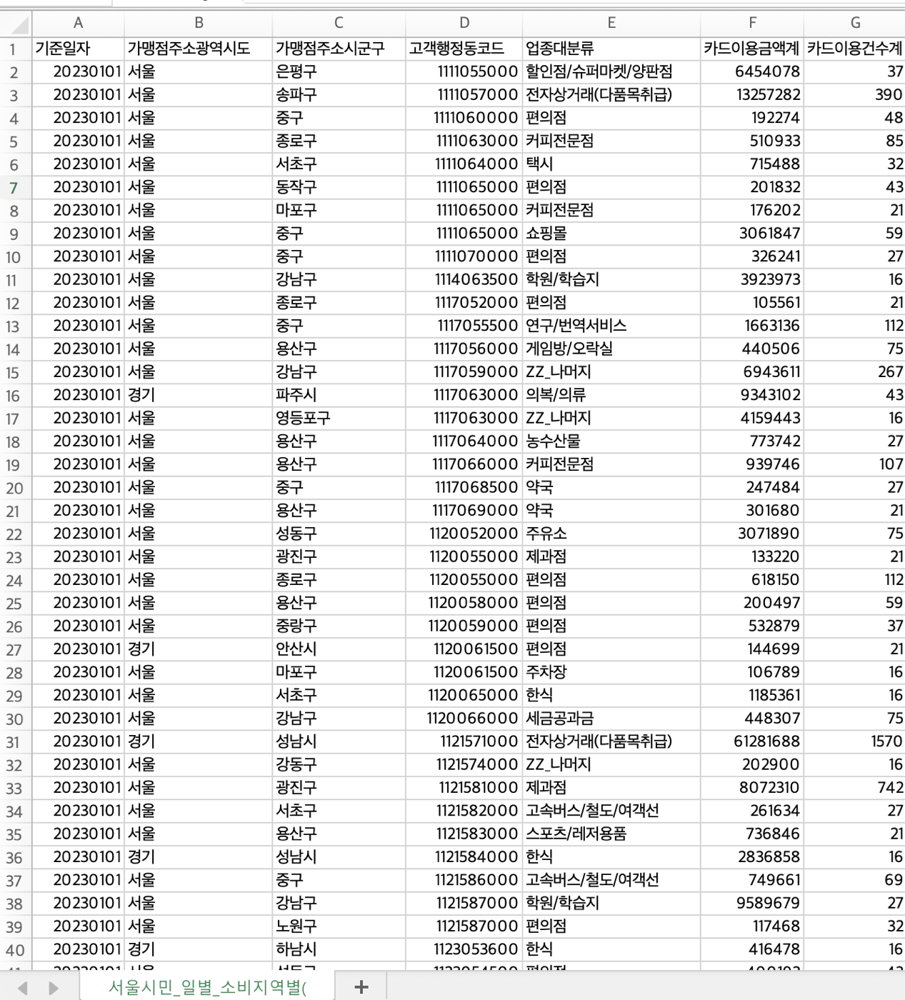
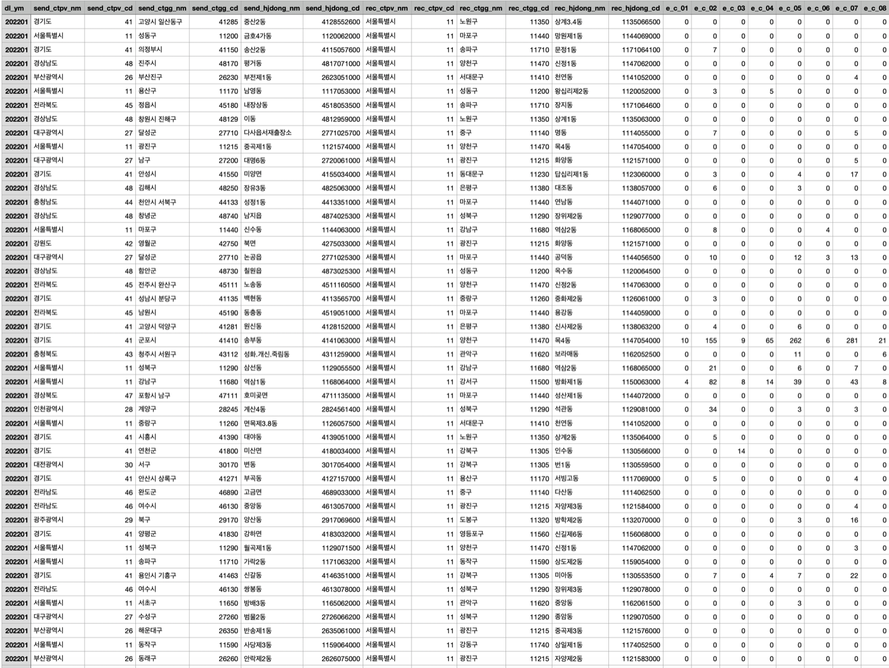
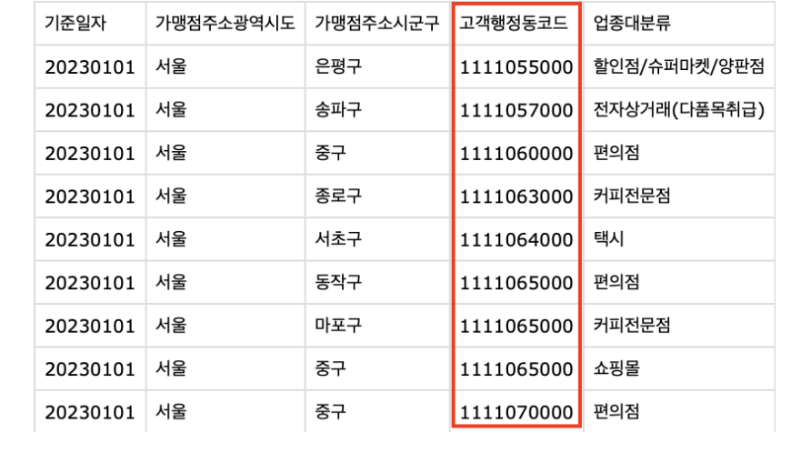
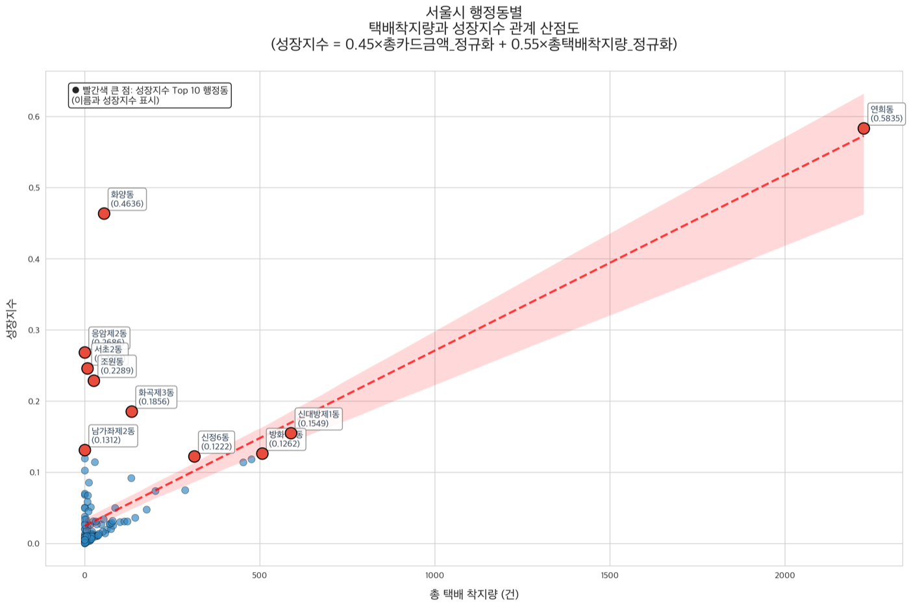
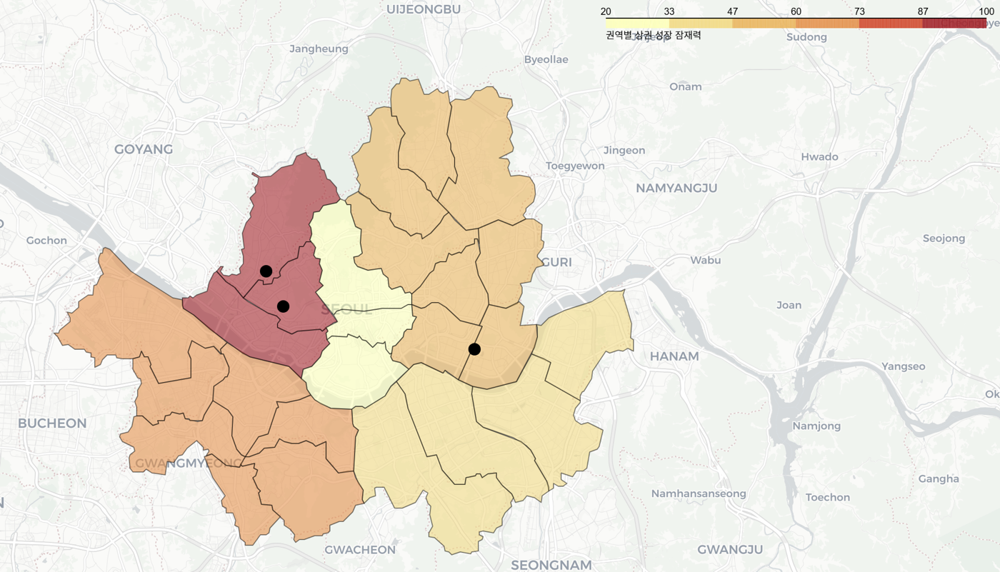
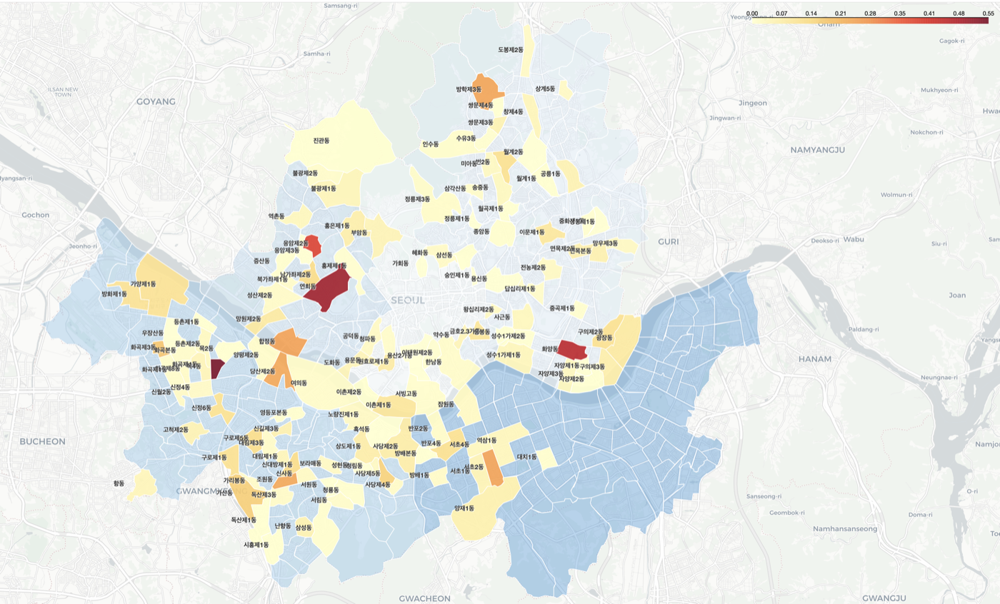
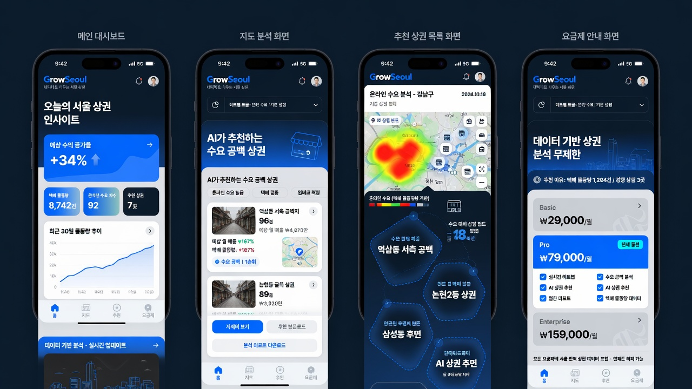

<meta charset="utf-8">
<meta name="viewport" content="width=device-width, initial-scale=1">
<title>Min Chanhong — Data &amp; AI</title>
<link rel="preconnect" href="https://fonts.googleapis.com">
<link rel="preconnect" href="https://fonts.gstatic.com" crossorigin>
<link href="https://fonts.googleapis.com/css2?family=Inter:wght@400;500;600;700&display=swap" rel="stylesheet">
<style>
:root{
 --ink:#1d1d1f;
 --mid-gray:#707070;
 --deep-gray:#474747;
 --hairline:#d6d6d6;
 --canvas:#f5f5f7;
 --paper:#ffffff;
 --cool-wash:#e8e8ed;
 --faded-surface:#fafafc;
 --quiet-dot:#777779;
 --blue:#0071e3;
 --link-blue:#0066cc;
 --ember:#b64400;

 --r-cards:28px; --r-links:10px; --r-badges:36px;
 --r-buttons:980px; --r-small-buttons:999px;

 --ease:cubic-bezier(.16,.84,.44,1);
 --page-max:1200px;
 --gutter:clamp(20px,5vw,80px);
 --section-gap:clamp(64px,10vw,120px);
}
*{box-sizing:border-box;margin:0;padding:0}
html{scroll-behavior:smooth}
body{background:var(--paper);color:var(--ink);
 font-family:'Inter',-apple-system,BlinkMacSystemFont,'Malgun Gothic','Apple SD Gothic Neo',sans-serif;
 -webkit-font-smoothing:antialiased;
 word-break:keep-all}   /* Korean wraps on 어절, not mid-word; no effect on Latin */
img{display:block;max-width:100%}
a{color:inherit;text-decoration:none}
[id]{scroll-margin-top:64px}

.wrap{max-width:var(--page-max);margin:0 auto;padding-inline:var(--gutter)}
.band{padding-block:var(--section-gap)}

/* ---- type scale (fluid, ratios preserve the documented line-heights) ---- */
.t-display {font-weight:700;font-size:clamp(2.75rem,9vw,6rem); line-height:1.0417; letter-spacing:-1.44px}
.t-heading-lg{font-weight:600;font-size:clamp(2.25rem,7vw,5rem); line-height:1.05; letter-spacing:-1.2px}
.t-heading {font-weight:600;font-size:clamp(1.75rem,4.5vw,3.5rem);line-height:1.0714;letter-spacing:-0.28px}
.t-heading-sm{font-weight:600;font-size:clamp(1.5rem,3vw,2.5rem); line-height:1.2}
.t-subheading{font-weight:600;font-size:clamp(1.25rem,2.2vw,2rem);line-height:1.125; letter-spacing:0.128px}
.t-body-lg {font-weight:400;font-size:1.75rem;line-height:1.1429;letter-spacing:0.196px}
.t-body {font-weight:400;font-size:1.3125rem;line-height:1.381;letter-spacing:0.231px}
.t-body-sm {font-weight:400;font-size:1.0625rem;line-height:1.4706;letter-spacing:-0.374px}
.t-caption {font-weight:400;font-size:.875rem;line-height:1.2857;letter-spacing:-0.224px}
.t-micro {font-weight:400;font-size:.75rem; line-height:1.3333;letter-spacing:-0.12px}

.ink{color:var(--ink)} .mid{color:var(--mid-gray)} .deep{color:var(--deep-gray)}
.center{text-align:center}

/* Apple headlines can center; body copy stays left-aligned */
p{max-width:64ch}

/* ---- entry: fade + translateY(16px→0), 420ms ease-out ---- */
.rise{opacity:0;transform:translateY(16px);
 transition:opacity .42s var(--ease),transform .42s var(--ease)}
.rise.in{opacity:1;transform:none}
@media (prefers-reduced-motion:reduce){
 .rise{opacity:1;transform:none;transition:none}
 html,.gallery{scroll-behavior:auto}
 .card:hover{transform:none}
}

/* ---- global nav: 44px sticky, blur on scroll, dropdown menus ---- */
nav{position:sticky;top:0;z-index:100;height:44px;
 background:rgba(255,255,255,.8);backdrop-filter:blur(20px);-webkit-backdrop-filter:blur(20px);
 transition:background .3s var(--ease)}
nav.scrolled{background:rgba(250,250,252,.92)}
nav .wrap{height:44px;display:flex;align-items:center;gap:clamp(12px,3vw,32px)}
nav .logo{font-weight:600;font-size:.8125rem;letter-spacing:-0.12px;white-space:nowrap;color:var(--ink)}
nav ul{margin-left:auto;display:flex;gap:clamp(10px,2vw,24px);list-style:none;align-items:center}
nav li{position:relative}
nav .top{font-family:inherit;font-size:.75rem;font-weight:400;color:var(--ink);
 background:none;border:0;border-bottom:1px solid transparent;padding:0 0 2px;cursor:pointer;
 display:inline-flex;align-items:center;white-space:nowrap;
 transition:border-color .2s var(--ease),color .2s var(--ease)}
nav .top:hover{color:var(--mid-gray)}
nav .top.active{border-bottom-color:var(--ink)}

/* display/gap/margin reset the `nav ul` flex row this list would otherwise inherit */
nav .menu{position:absolute;top:calc(100% + 12px);left:50%;list-style:none;
 display:grid;gap:2px;margin-left:0;
 transform:translateX(-50%) translateY(-6px);
 min-width:210px;max-width:min(280px,calc(100vw - 24px));
 background:rgba(255,255,255,.94);backdrop-filter:blur(20px);-webkit-backdrop-filter:blur(20px);
 border-radius:14px;box-shadow:0 4px 12px rgba(0,0,0,.06),0 16px 40px rgba(0,0,0,.14);
 padding:8px;opacity:0;visibility:hidden;
 transition:opacity .2s var(--ease),transform .2s var(--ease),visibility .2s}
nav li:hover .menu,nav li:focus-within .menu{opacity:1;visibility:visible;transform:translateX(-50%) translateY(0)}
nav .menu::before{content:'';position:absolute;left:0;right:0;top:-12px;height:12px}
nav .menu a{display:flex;gap:10px;padding:9px 12px;border-radius:9px;
 font-size:.8125rem;line-height:1.35;color:var(--ink);border:0}
nav .menu a:hover{background:var(--cool-wash)}
nav .menu .idx{color:var(--quiet-dot);font-size:.6875rem;padding-top:2px;flex:none}

/* ---- buttons ---- */
.btn{display:inline-block;font-size:1.0625rem;font-weight:400;
 transition:background .2s var(--ease),opacity .2s var(--ease),transform .2s var(--ease)}
.btn-filled{border-radius:var(--r-buttons);background:var(--blue);color:#fff;
 padding:11px 16px}
.btn-filled:hover{background:#0077ed}
.btn-filled:active{transform:scale(.98)}
.btn-ghost{border-radius:var(--r-small-buttons);border:1px solid rgba(0,0,0,.8);
 color:var(--ink);padding:11px 16px}
.btn-ghost:hover{background:var(--cool-wash)}
.btn-link{color:var(--link-blue);font-size:1.0625rem}
.btn-link:hover{text-decoration:underline}

/* ---- hero (Product Hero pattern) ---- */
.hero{padding-block:64px 0;text-align:center}
.hero .eyebrow{font-size:1.0625rem;color:var(--mid-gray);margin-bottom:12px}
/* balance lets the headline pick its own even break instead of a hardcoded <br> */
.hero h1{margin:0 auto 26px;max-width:16ch;text-wrap:balance}
.hero .sub{color:var(--mid-gray);margin:0 auto;max-width:47ch;text-wrap:pretty}
.hero .focus{font-size:1.0625rem;color:var(--quiet-dot);margin:18px auto 0;max-width:none}
.hero .btn{margin-top:34px}
.hero figure{margin-top:56px}
.hero figure img{width:100%;max-width:640px;margin-inline:auto;
 aspect-ratio:4/5;object-fit:cover;object-position:top;border-radius:var(--r-cards)}

/* ---- section header (left-aligned label + supporting paragraph) ---- */
.head{margin-bottom:clamp(40px,6vw,72px)}
.head .eyebrow{color:var(--ink);margin-bottom:12px}
.head p{color:var(--mid-gray);margin-top:12px}

/* ---- fact list (definition rows, hairline dividers) ---- */
.facts{display:grid;grid-template-columns:1fr 1fr;gap:0 clamp(24px,5vw,64px)}
.facts dl{display:grid;grid-template-columns:7.5rem 1fr}
.facts dt,.facts dd{padding-block:14px;border-top:1px solid var(--hairline)}
.facts dt{color:var(--mid-gray);font-size:.875rem}
.facts dd{font-size:1.0625rem}

/* ---- work gallery: horizontal scroll-snap slider with paddles ---- */
/* --edge keeps the first slide flush with the centered .wrap content edge */
.gallery{--edge:max(var(--gutter),calc((100% - var(--page-max))/2 + var(--gutter)));
 display:flex;gap:20px;overflow-x:auto;overscroll-behavior-x:contain;
 scroll-snap-type:x mandatory;scroll-behavior:smooth;
 padding-inline:var(--edge);scroll-padding-inline-start:var(--edge);
 padding-block:6px 8px;scrollbar-width:none;-ms-overflow-style:none}
.gallery::-webkit-scrollbar{display:none}
.slide{flex:0 0 min(88vw,860px);scroll-snap-align:start;scroll-margin-top:80px;
 background:var(--paper);border-radius:var(--r-cards);overflow:hidden;
 display:flex;flex-direction:column}
.slide .shot{background:var(--canvas);padding:clamp(18px,2.5vw,28px);
 display:grid;grid-template-columns:1fr;gap:16px;align-items:center}
.slide .shot.two{grid-template-columns:1fr 1fr}
.slide .shot img{width:100%;height:clamp(220px,32vw,400px);object-fit:contain;object-position:center}
.slide .cap{padding:clamp(24px,3vw,34px);flex:1}
.slide .no{color:var(--quiet-dot);font-size:.875rem;margin-bottom:10px;letter-spacing:.04em}
.slide h3{margin-bottom:12px}
.slide .cap p{color:var(--mid-gray)}
.slide .note{color:var(--mid-gray);font-size:.875rem;margin-top:16px;
 padding-top:16px;border-top:1px solid var(--hairline)}

.paddles{display:flex;justify-content:flex-end;gap:12px;margin-top:28px}
.paddle{width:36px;height:36px;border:0;border-radius:50%;background:var(--cool-wash);
 cursor:pointer;display:grid;place-items:center;
 transition:background .2s var(--ease),opacity .2s var(--ease)}
.paddle:hover:not(:disabled){background:#dcdce1}
.paddle:disabled{opacity:.32;cursor:default}
.paddle i{width:8px;height:8px;border-right:1.5px solid var(--deep-gray);
 border-bottom:1.5px solid var(--deep-gray);display:block}
.paddle.prev i{transform:translateX(1px) rotate(135deg)}
.paddle.next i{transform:translateX(-1px) rotate(-45deg)}

/* ---- cards: lift + layered shadow on hover ---- */
.card{background:var(--paper);border-radius:var(--r-cards);padding:28px;
 box-shadow:0 1px 2px rgba(0,0,0,.05),0 6px 22px rgba(0,0,0,.07);
 transition:transform .35s var(--ease),box-shadow .35s var(--ease)}
.card:hover{transform:translateY(-6px);
 box-shadow:0 10px 18px rgba(0,0,0,.07),0 26px 52px rgba(0,0,0,.12)}
.card .no{color:var(--quiet-dot);font-size:.875rem;margin-bottom:16px;letter-spacing:.04em}
.card h3{margin-bottom:8px}
.card .meta{color:var(--mid-gray);font-size:.875rem;margin-bottom:12px}
.card p{color:var(--mid-gray)}
.badge{display:inline-block;color:var(--ember);font-size:.75rem;font-weight:500;
 margin-bottom:8px}

/* ---- skills: n rows x 1 column, wide two-pane cards ---- */
.rows{display:grid;gap:20px}
.skill{display:grid;grid-template-columns:minmax(190px,.85fr) 2.15fr;
 gap:clamp(20px,4vw,56px);padding:clamp(28px,3.5vw,40px)}
/* grid children default to min-width:auto; long unbroken runs (a·b·c chains, file paths)
   would otherwise set the card's min-content width and push the page sideways */
.skill>*{min-width:0;overflow-wrap:anywhere}
/* smaller than the default t-subheading clamp: the .side column narrows to ~200px
   at the two-column breakpoint, where "RAG & Computer Vision" needs the extra room
   other one-word headings (Python, R, SQL) don't */
.skill h3{font-size:clamp(1.0625rem,1.81vw,1.3rem)}
.skill .side .meta{margin-bottom:0}
.skill .body p+p{margin-top:14px}
.skill .body .lede{color:var(--ink)}
.chips{display:flex;flex-wrap:wrap;gap:8px;margin-top:20px}
.chip{font-size:.75rem;line-height:1.2;color:var(--deep-gray);background:var(--canvas);
 border-radius:var(--r-badges);padding:7px 13px}

/* ---- education accordion cards ---- */
.edu-card{background:var(--paper);border-radius:var(--r-cards);
 margin-bottom:20px;overflow:hidden;
 box-shadow:0 1px 2px rgba(0,0,0,.05),0 6px 22px rgba(0,0,0,.07);
 transition:transform .35s var(--ease),box-shadow .35s var(--ease)}
.edu-card:hover{transform:translateY(-6px);
 box-shadow:0 10px 18px rgba(0,0,0,.07),0 26px 52px rgba(0,0,0,.12)}
.edu-card summary{display:flex;align-items:center;gap:20px;
 padding:28px;cursor:pointer;list-style:none}
.edu-card summary::-webkit-details-marker{display:none}
.edu-card summary:focus-visible{outline:2px solid var(--blue);outline-offset:-2px}
.edu-card .no{color:var(--quiet-dot);font-size:.875rem;flex:none;width:1.5rem}
.edu-card .head-text{flex:1}
.edu-card h3{margin-bottom:4px}
.edu-card .meta{color:var(--mid-gray);font-size:.875rem}
.edu-card .chev{width:9px;height:9px;flex:none;
 border-right:1.5px solid var(--mid-gray);border-bottom:1.5px solid var(--mid-gray);
 transform:rotate(45deg);transition:transform .2s var(--ease)}
.edu-card[open] .chev{transform:rotate(-135deg)}
.edu-card .body{padding:0 28px 28px;color:var(--mid-gray)}
.edu-card .body dl{display:grid;grid-template-columns:8rem 1fr;margin-top:16px}
/* grid children default to min-width:auto; long parenthetical (a·b·c) runs would
   otherwise refuse to wrap and push the card past the viewport */
.edu-card .body dt,.edu-card .body dd{padding-block:10px;border-top:1px solid var(--hairline);
 font-size:.9375rem;min-width:0;overflow-wrap:anywhere}
.edu-card .body dt{color:var(--mid-gray)}
.edu-card .body dd{color:var(--ink)}

/* ---- closing CTA band ---- */
.cta{text-align:center}
.cta .eyebrow{font-size:.75rem;font-weight:500;letter-spacing:.14em;text-transform:uppercase;
 color:var(--quiet-dot);margin-bottom:20px}
.cta h2{margin-bottom:24px}
.cta .cta-sub{color:var(--mid-gray);max-width:36ch;margin:0 auto 36px;text-align:center}
.cta .actions{display:flex;flex-direction:column;align-items:center;gap:14px}

/* ---- footer legal block ---- */
footer{background:var(--canvas);padding-block:40px}
footer .wrap{display:flex;justify-content:space-between;gap:16px;flex-wrap:wrap;
 color:var(--mid-gray);font-size:.75rem;line-height:1.33}
footer a{color:var(--link-blue)}
footer a:hover{text-decoration:underline}

@media (max-width:900px){
 .skill{grid-template-columns:1fr;gap:20px}
}
@media (max-width:734px){
 .facts{grid-template-columns:1fr}
 .facts dl{grid-template-columns:6rem 1fr}
 nav ul{gap:10px}
 nav .top{font-size:.6875rem}
 nav .menu{left:auto;right:0;transform:translateY(-6px)}
 nav li:hover .menu,nav li:focus-within .menu{transform:translateY(0)}
 .slide{flex-basis:86vw}
 .slide .shot.two{grid-template-columns:1fr}
 .edu-card summary{gap:12px;padding:20px}
 .edu-card .body{padding:0 20px 20px}
 .edu-card .body dl{grid-template-columns:6rem 1fr}
}
</style>

<nav id="nav">
 <div class="wrap">
 <a class="logo" href="#top">Min Chanhong</a>
 <ul>
 <li><a class="top" data-nav="profile" href="#profile">Profile</a></li>

 <li>
 <button class="top" data-nav="work" type="button" aria-haspopup="true">Work</button>
 <ul class="menu">
 <li><a href="#work"><span class="idx">01</span>서울 빅데이터 공모전 · GrowSeoul</a></li>
 </ul>
 </li>

 <li>
 <button class="top" data-nav="skills" type="button" aria-haspopup="true">Skills</button>
 <ul class="menu">
 <li><a href="#skill-python"><span class="idx">01</span>Python</a></li>
 <li><a href="#skill-r"><span class="idx">02</span>R</a></li>
 <li><a href="#skill-sql"><span class="idx">03</span>SQL</a></li>
 <li><a href="#skill-rag"><span class="idx">04</span>RAG &amp; Computer Vision</a></li>
 </ul>
 </li>

 <li>
 <button class="top" data-nav="education" type="button" aria-haspopup="true">Education</button>
 <ul class="menu">
 <li><a href="#edu-bootcamp"><span class="idx">01</span>한남대학교 AI Bootcamp</a></li>
 <li><a href="#edu-sql"><span class="idx">02</span>SQL 데이터 캠프</a></li>
 </ul>
 </li>

 <li><a class="top" data-nav="contact" href="#contact">Contact</a></li>
 </ul>
 </div>
</nav>

<!-- ============ HERO ============ -->
<header class="hero band" id="top">
 <div class="wrap">
 <p class="eyebrow t-body-sm rise">HNU AI Data Science Lab · 학부연구생</p>
 <h1 class="t-display ink rise">Teaching AI to See.</h1>
 <p class="t-body sub rise">데이터 분석과 데이터 파이프라인 구축을 주로 합니다.
 빠른 적응력과 이해력을 바탕으로 낯선 데이터와 상황에도 대응합니다.</p>
 <p class="focus rise">주요 관심사 및 연구 분야 — RAG · Computer Vision · 웹개발</p>
 <a class="btn btn-filled rise" href="mailto:cksgdx@icloud.com">메일 보내기</a>
 <figure class="rise">
 
 </figure>
 </div>
</header>

<!-- ============ PROFILE ============ -->
<section id="profile" class="band">
 <div class="wrap">
 <div class="head rise">
 <p class="eyebrow t-subheading">프로필</p>
 </div>
 <div class="facts">
 <dl class="rise">
 <dt>NAME</dt><dd>민찬홍 (Min Chanhong)</dd>
 <dt>MAJOR</dt><dd>한남대학교 AI 데이터사이언스</dd>
 <dt>TERM</dt><dd>2023.03 – 2029.02 (재학)</dd>
 <dt>LAB</dt><dd>박영호 교수 연구실 학부연구생 (2026.06 –)</dd>
 </dl>
 <dl class="rise">
 <dt>FOCUS</dt><dd>RAG · Computer Vision · 웹개발</dd>
 <dt>TOOLS</dt><dd>Python · R · SQL</dd>
 <dt>EMAIL</dt><dd><a class="btn-link" style="font-size:inherit" href="mailto:cksgdx@icloud.com">cksgdx@icloud.com</a></dd>
 <dt>PHONE</dt><dd>010-8690-2995</dd>
 </dl>
 </div>
 </div>
</section>

<!-- ============ WORK ============ -->
<section id="work" class="band">
 <div class="wrap">
 <div class="head rise">
 <p class="eyebrow t-subheading">서울 빅데이터 공모전 — GrowSeoul</p>
 <p class="t-body">서울시 카드 소비 데이터와 CJ대한통운 택배 물량 데이터를 결합해 연희동을
 잠재 상권으로 도출하고, 구독형 분석 플랫폼까지 설계한 작업입니다.
 <span>2026.03 – 2026.05.</span></p>
 </div>
 </div>

 <div class="rise">
 <div class="gallery" id="gallery">

 <article class="slide" id="w01">
 <div class="shot two">
 
 
 </div>
 <div class="cap">
 <p class="no">01</p>
 <h3 class="t-heading-sm">두 개의 데이터, 하나의 축</h3>
 <p class="t-body-sm">카드 소비 데이터와 택배 물량 데이터는 집계 단위가 서로 달랐습니다.
 행정동 코드를 기준으로 표준화하고 인코딩과 결측을 정리해 두 축을 같은 테이블 위에 올렸습니다.</p>
 </div>
 </article>

 <article class="slide" id="w02">
 <div class="shot">
 
 </div>
 <div class="cap">
 <p class="no">02</p>
 <h3 class="t-heading-sm">전처리는 코드로 남긴다</h3>
 <p class="t-body-sm">행정동 코드 표준화, 인코딩 처리, 이상치 정리를 파이썬 스크립트로 작성해
 재실행 가능한 형태로 남겼습니다. 수작업 보정을 남기지 않는 것이 목표였습니다.</p>
 </div>
 </article>

 <article class="slide" id="w03">
 <div class="shot">
 
 </div>
 <div class="cap">
 <p class="no">03</p>
 <h3 class="t-heading-sm">성장 지수 0.45 : 0.55</h3>
 <p class="t-body-sm">소비 성장과 물류 성장을 0.45 대 0.55로 묶어 성장 지수를 정의하고,
 상위 행정동을 산점도와 순위표로 확인했습니다. 가중치는 근거를 붙였지만 여전히 설정값입니다.</p>
 </div>
 </article>

 <article class="slide" id="w04">
 <div class="shot two">
 
 
 </div>
 <div class="cap">
 <p class="no">04</p>
 <h3 class="t-heading-sm">지도 위에서 연희동</h3>
 <p class="t-body-sm">상위 행정동을 자치구 단위와 행정동 단위로 나누어 매핑했습니다. 연희동이
 기존 상권 분류에는 없지만 두 지표가 함께 오르는 구간에 있다는 점이 드러났습니다.</p>
 </div>
 </article>

 <article class="slide" id="w05">
 <div class="shot">
 
 </div>
 <div class="cap">
 <p class="no">05</p>
 <h3 class="t-heading-sm">분석에서 서비스로</h3>
 <p class="t-body-sm">결과를 소상공인·프랜차이즈·지자체가 쓸 수 있는 구독형 플랫폼 GrowSeoul로
 설계했습니다. <span>Starter 29,000원, Pro 79,000원, Enterprise</span> 세 단계입니다.</p>
 <p class="note">한계 — 택배 데이터 노이즈 · 가중치의 주관성 · 생존 편향.
 다음은 회귀 분석과 머신러닝 기반 가중치 최적화입니다.</p>
 </div>
 </article>

 </div>

 <div class="wrap paddles">
 <button class="paddle prev" type="button" aria-label="이전 항목" aria-controls="gallery"><i></i></button>
 <button class="paddle next" type="button" aria-label="다음 항목" aria-controls="gallery"><i></i></button>
 </div>
 </div>
</section>

<!-- ============ SKILLS ============ -->
<section id="skills" class="band">
 <div class="wrap">
 <div class="head rise">
 <p class="eyebrow t-subheading">다루는 것</p>
 <p class="t-body">전공 수업과 부트캠프, 연구실 프로젝트에서 실제로 코드를 써 본 범위입니다.
 각 항목은 정리해 둔 강의 노트와 프로젝트 저장소에 대응합니다.</p>
 </div>

 <div class="rows">

 <article class="card skill rise" id="skill-python">
 <div class="side">
 <p class="no">01</p>
 <h3 class="t-subheading">Python</h3>
 <p class="meta">데이터 수집 · 전처리 · 통계 검정</p>
 </div>
 <div class="body">
 <p class="t-body-sm lede">수집부터 검정까지 한 줄기로 씁니다. 공개 데이터를 끌어와 정리하고,
 가설을 세워 검정하는 데까지가 익숙한 범위입니다.</p>
 <p class="t-body-sm">CSV·TSV·Excel은 물론 XML·JSON OpenAPI를 파싱해 데이터프레임으로 적재하고,
 파일 존재 여부에 따라 header 옵션을 제어하는 방식으로 API 수집을 반복 실행 가능하게 자동화했습니다.
 정적 페이지는 BeautifulSoup으로, 클라이언트 사이드 동적 페이지는 별도 경로로 크롤링해
 매장 정보와 재난문자 목록을 CSV로 떨어뜨리는 과제를 수행했습니다.</p>
 <p class="t-body-sm">NumPy로 배열 연산·인덱싱·통계 함수를 다루고, pandas로 컬럼명 정리, 날짜형 변환,
 파생변수 생성, 중복 제거, group by 요약, 다중 정렬, join, 피벗테이블까지 처리합니다.
 시각화는 꺾은선·막대·히스토그램·상자그림·산점도·히트맵을 상황에 맞게 씁니다.
 통계는 단일/두 모집단 가설검정과 일원배치 분산분석, TukeyHSD 사후검정까지 다뤘습니다.</p>
 <div class="chips">
 <span class="chip">pandas</span><span class="chip">NumPy</span>
 <span class="chip">BeautifulSoup</span><span class="chip">OpenAPI · XML · JSON</span>
 <span class="chip">group by · join · pivot</span>
 <span class="chip">가설검정</span><span class="chip">ANOVA · TukeyHSD</span>
 <span class="chip">matplotlib</span>
 </div>
 </div>
 </article>

 <article class="card skill rise" id="skill-r">
 <div class="side">
 <p class="no">02</p>
 <h3 class="t-subheading">R</h3>
 <p class="meta">통계 · 시각화 · 텍스트 마이닝 · 지도</p>
 </div>
 <div class="body">
 <p class="t-body-sm lede">숫자만으로는 같아 보이는 데이터가 그래프에서는 전혀 다르다는 것을
 앤스컴 4중주로 확인한 뒤부터, 분석의 마지막 단계는 항상 그림으로 둡니다.</p>
 <p class="t-body-sm">dplyr의 select · mutate · filter · summarise · group_by · arrange · join · distinct · rename 으로
 파이프라인을 구성합니다. SQL과 사고 방식이 거의 같아 두 도구를 오가며 씁니다.
 시각화는 ggplot2 기반으로 geom_point에 옵션을 주고 facet_wrap으로 기준별 분할까지 다룹니다.
 스케일이 큰 변수는 로그 변환으로 조정합니다.</p>
 <p class="t-body-sm">텍스트 마이닝은 HTML을 XML로 파싱해 태그 텍스트를 뽑고, 말뭉치로 변환한 뒤
 소문자화·숫자 제거·불용어 제거·문장부호 제거·공백 정리를 거쳐 DTM을 만들고 워드클라우드로 시각화합니다.
 지도는 leaflet/OpenStreetMap 위에 CartoDB Positron·DarkMatter, Esri 위성 타일을 얹고,
 폴리곤과 연결선, 마커·팝업을 직접 그렸습니다. 결과는 R Markdown과 Shiny로 문서와 앱으로 내보냅니다.</p>
 <div class="chips">
 <span class="chip">dplyr</span><span class="chip">ggplot2</span>
 <span class="chip">tm · DTM</span><span class="chip">wordcloud</span>
 <span class="chip">leaflet</span><span class="chip">GIS · polygon</span>
 <span class="chip">R Markdown</span><span class="chip">Shiny</span>
 </div>
 </div>
 </article>

 <article class="card skill rise" id="skill-sql">
 <div class="side">
 <p class="no">03</p>
 <h3 class="t-subheading">SQL</h3>
 <p class="meta">4주 · 주당 25강 · 데이터리안 입문반</p>
 </div>
 <div class="body">
 <p class="t-body-sm lede">쿼리를 작성 순서가 아니라 실행 순서로 읽습니다 —
 FROM → JOIN → WHERE → GROUP BY → SELECT → ORDER BY. 이 순서를 잡고 나서 집계와 조인이 정리됐습니다.</p>
 <p class="t-body-sm">따릉이 자전거 이용현황 데이터셋으로 추출·정렬·숫자 연산부터 시작해
 집계 함수와 데이터 요약, CASE 조건문, 피봇테이블, 테이블 연결까지 진행했습니다.
 마지막에는 RFM 고객 세분화 분석과 매출 분석 이론을 다뤄 쿼리를 지표 설계로 잇는 연습을 했습니다.</p>
 <p class="t-body-sm">강의만 듣고 끝내지 않도록 HackerRank와 SolveSQL에서 외부 문제를 따로 풀어
 학습 내용을 검증했고, 정리한 노트는 Notion에 주제별로 남겨 두었습니다.</p>
 <div class="chips">
 <span class="chip">SELECT · WHERE</span><span class="chip">GROUP BY · 집계함수</span>
 <span class="chip">JOIN</span><span class="chip">CASE</span>
 <span class="chip">PIVOT</span><span class="chip">RFM 세분화</span>
 <span class="chip">HackerRank</span><span class="chip">SolveSQL</span>
 </div>
 </div>
 </article>

 <article class="card skill rise" id="skill-rag">
 <div class="side">
 <span class="badge">진행중</span>
 <h3 class="t-subheading">RAG &amp; Computer Vision</h3>
 <p class="meta">연구실 프로젝트 · OpenCV</p>
 </div>
 <div class="body">
 <p class="t-body-sm lede">연구실에서 진행 중인 LumiGuide는 루미네선스(OSL/TL) 연대 측정 워크플로
 어시스턴트입니다. 통계는 다시 구현하지 않고, 검증된 R 패키지를 그대로 호출합니다.</p>
 <p class="t-body-sm">Streamlit으로 업로드 → 신호 분석 → SAR → De 분포 탭을 구성하고,
 rpy2로 R <code>Luminescence</code> 패키지를 호출해 계산을 맡깁니다.
 De 분포의 과분산·왜도·다봉성을 분석해 CAM·MAM·FMM 중 적합한 통계 연대 모델을 추천하는 것이 핵심 기능이며,
 모델 선택은 재현성을 위해 규칙 기반으로 두고 그 위에 RAG를 얹는 방향으로 설계하고 있습니다.
 루미네선스 문헌을 OCR해 코퍼스로 만들고, LLM이 그 코퍼스를 근거로 추천 이유를 설명하는 구조입니다.</p>
 <p class="t-body-sm">Computer Vision은 OpenCV로 화소 점처리(산술·논리 연산, 밝기와 대비, 합성과 워터마크),
 히스토그램 스트레칭·평활화·정합, 화소 영역 처리(filter2D, blur, GaussianBlur, 샤프닝, 엠보싱),
 소벨·라플라시안·캐니 경계선 검출, PSNR 화질 평가, 중간값·최소/최대 비선형 필터,
 침식·팽창·열림·닫힘의 형태학 연산, 그리고 웹캠과 동영상 파일 처리까지 실습했습니다.</p>
 <div class="chips">
 <span class="chip">RAG</span><span class="chip">Streamlit</span>
 <span class="chip">rpy2</span><span class="chip">R Luminescence</span>
 <span class="chip">CAM · MAM · FMM</span>
 <span class="chip">OpenCV</span><span class="chip">Convolution · Edge</span>
 <span class="chip">Histogram Equalization</span><span class="chip">Morphology</span>
 </div>
 </div>
 </article>

 </div>
 </div>
</section>

<!-- ============ EDUCATION ============ -->
<section id="education" class="band">
 <div class="wrap">
 <div class="head rise">
 <p class="eyebrow t-subheading">과정</p>
 </div>

 <details class="edu-card rise" id="edu-bootcamp">
 <summary>
 <p class="no">01</p>
 <div class="head-text">
 <h3 class="t-subheading">한남대학교 AI Bootcamp</h3>
 <p class="meta">2026.06.24 – 2026.08.13</p>
 </div>
 <span class="chev"></span>
 </summary>
 <div class="body">
 <p class="t-body-sm">교육부·한국무역협회(KITA) 주관 첨단산업 인재양성 부트캠프 AI 트랙입니다.
 중급 레벨에서 영상·음성·자연어 데이터 처리(B1), 머신러닝·신경망 이론(B2),
 산업 현장 실습(B3)까지 세 과정을 연속으로 밟고 있습니다.</p>
 <dl>
 <dt>PROGRAM</dt><dd>2026 첨단산업 인재양성 부트캠프 · AI 트랙</dd>
 <dt>HOST</dt><dd>교육부 · 한국무역협회(KITA)</dd>
 <dt>LEVEL</dt><dd>중급 (Intermediate)</dd>
 <dt>B1</dt><dd>2026.06.24 – 2026.07.03 · 영상(CNN·PointNet·Vision Transformer)·
 음성(End-to-End ASR)·자연어 데이터 처리를 다루고, 이미지 트랙 프로젝트로
 Roboflow 기반 객체 탐지 모델을 구축하며 마무리했습니다.</dd>
 <dt>B2</dt><dd>2026.07.06 – 2026.07.16 · 선형·로지스틱 회귀, 결정 트리·랜덤 포레스트,
 신경망 오차역전파를 다루고, 서울시 자전거 대여량 예측 실습으로 이론을 검증했습니다.</dd>
 <dt>B3</dt><dd>2026.08.03 – 2026.08.13 (진행중) · 산업 현장 특강과 함께
 전기차 주행 데이터로 물리 기반 신경망(Physics-guided NN)을 구현해
 배터리 전력을 예측하는 실습을 진행하고 있습니다.</dd>
 </dl>
 </div>
 </details>

 <details class="edu-card rise" id="edu-sql">
 <summary>
 <p class="no">02</p>
 <div class="head-text">
 <h3 class="t-subheading">SQL 데이터 캠프</h3>
 <p class="meta">2026.02.02 – 2026.02.28</p>
 </div>
 <span class="chev"></span>
 </summary>
 <div class="body">
 <p class="t-body-sm">4주 · 주당 25강 구성의 SELECT 중심 과정입니다. 강의만 듣고 끝내지
 않도록 HackerRank와 SolveSQL에서 외부 문제를 풀어 학습 내용을 따로 검증했습니다.</p>
 <dl>
 <dt>PERIOD</dt><dd>2026.02.02 – 2026.02.28 (4주)</dd>
 <dt>VOLUME</dt><dd>주당 25강</dd>
 <dt>SCOPE</dt><dd>SELECT 문 중심</dd>
 <dt>PROGRESS</dt><dd>진도 100% · 이해도 100% · 미션 25%</dd>
 <dt>VALIDATION</dt><dd>HackerRank · SolveSQL</dd>
 </dl>
 </div>
 </details>
 </div>
</section>

<!-- ============ CONTACT ============ -->
<section id="contact" class="band cta">
 <div class="wrap">
 <p class="eyebrow rise">Contact</p>
 <h2 class="t-heading-lg ink rise">Let's work together.</h2>
 <p class="cta-sub t-body rise">Currently open to research collaborations, internships,
 and data roles. <br>I read every message and reply within a day.</p>
 <div class="actions rise">
 <a class="btn btn-ghost" href="mailto:cksgdx@icloud.com">cksgdx@icloud.com</a>
 <a class="btn btn-ghost" href="tel:+821086902995">010-8690-2995</a>
 </div>
 </div>
</section>

<footer>
 <div class="wrap">
 <span>Min Chanhong — 한남대학교 AI 데이터사이언스</span>
 <span>© 2026 Min Chanhong. All rights reserved.</span>
 </div>
</footer>

<script>
// Entry cascade: fade + translateY(16px→0), 80ms stagger within a shared container.
const io = new IntersectionObserver((entries) => {
 entries.filter(e => e.isIntersecting).forEach((e, i) => {
 e.target.style.transitionDelay = `${i * 80}ms`;
 e.target.classList.add('in');
 io.unobserve(e.target);
 });
}, {rootMargin: '0px 0px -10% 0px'});
document.querySelectorAll('.rise').forEach(el => io.observe(el));

// Nav: frosted background once scrolled, active item tracks the section in view.
const navEl = document.getElementById('nav');
addEventListener('scroll', () => navEl.classList.toggle('scrolled', scrollY > 4), {passive:true});

const tops = [...document.querySelectorAll('nav [data-nav]')];
const spy = new IntersectionObserver((entries) => {
 entries.forEach(e => {
 if (!e.isIntersecting) return;
 tops.forEach(el => el.classList.toggle('active', el.dataset.nav === e.target.id));
 });
}, {rootMargin: '-64px 0px -70% 0px'});
tops.forEach(el => {
 const target = document.getElementById(el.dataset.nav);
 if (target) spy.observe(target);
});

// Dropdowns open on hover/focus-within (CSS). Blur after picking so the panel closes.
document.querySelectorAll('nav .menu a').forEach(a =>
 a.addEventListener('click', () => a.blur()));

// Work gallery: paddles scroll one slide; anchors from the nav are handled natively.
const gallery = document.getElementById('gallery');
const prev = document.querySelector('.paddle.prev');
const next = document.querySelector('.paddle.next');
const step = () => {
 const first = gallery.firstElementChild;
 return first.offsetWidth + parseFloat(getComputedStyle(gallery).columnGap || 20);
};
prev.addEventListener('click', () => gallery.scrollBy({left: -step()}));
next.addEventListener('click', () => gallery.scrollBy({left: step()}));

const syncPaddles = () => {
 const max = gallery.scrollWidth - gallery.clientWidth;
 prev.disabled = gallery.scrollLeft <= 1;
 next.disabled = gallery.scrollLeft >= max - 1;
};
gallery.addEventListener('scroll', syncPaddles, {passive:true});
addEventListener('resize', syncPaddles);
syncPaddles();
</script>
